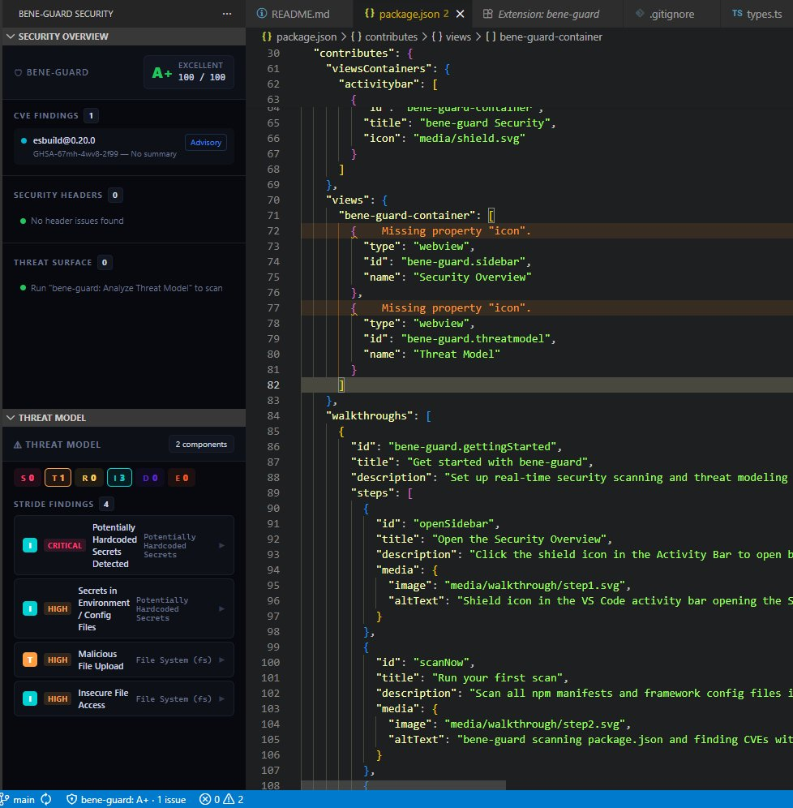

CVE detection, OWASP header linting, STRIDE threat modeling, and one-click fixes — all without leaving VS Code.

Scans package.json and lock files on every save. Queries the OSV API — the same database behind GitHub Dependabot — and shows inline diagnostics with severity-coded colours and direct advisory links.
Parses Next.js, Vercel, Netlify, and Helmet configs. Checks 7 OWASP headers against production best practices. Flags missing headers and dangerous misconfigurations like unsafe-inline CSP and wildcard CORS.
Every finding comes with lightbulb actions. Insert secure defaults, strip unsafe directives from CSP, or jump straight to the relevant OWASP cheat sheet. Fix vulnerabilities without leaving your editor.
Analyzes your codebase for auth surfaces, databases, API routes, external services, secrets, and file I/O. Maps each component to STRIDE threat categories with severity and mitigation suggestions.
Install from Open VSX or download the .vsix directly. Works with VS Code, VSCodium, Cursor, Windsurf, and Gitpod.
Search "bene-guard"
Ctrl+Shift+P → Install from VSIX